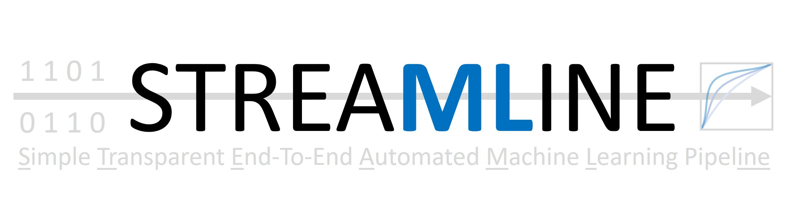

STREAMLINE
Overview
STREAMLINE is an end-to-end automated machine learning (AutoML) pipeline that empowers anyone to easily train, interpret, and apply predictive models as part of a rigorous and customizable data mining analysis. It is programmed in Python 3 using many common libraries including Pandas and scikit-learn.
The schematic below breaks the STREAMLINE analysis pipeline down into 4 basic components: (1) preprocessing and feature transformation, (2) feature importance evaluation and selection, (3) modeling, and (4) postprocessing. It also summarizes all major elements automated within the pipeline.
We recommend reviewing the ‘About (FAQs)’ section to gain a deeper understanding of STREAMLINE with respect to it’s overall design, what it includes, what it can be used for, and implementation highlights that differentiate it from other AutoML tools.
Current Limitations
At present, STREAMLINE is limited to supervised learning on tabular, binary classification data. We are currently expanding STREAMLINE to multi-class and regression outcome data as well.
As STREAMLINE is currently in its ‘beta’ release, we recommend users first check that they have downloaded the most recent release of STREAMLINE before use. We are actively updating this software as feedback is received.
STREAMLINE Publication
The first publication detailing STREAMLINE (release Beta 0.2.4) and applying it to simulated benchmark data can be found here.
This paper is also available as a preprint on arxiv, here.
Disclaimer
We make no claim that this is the best or only viable way to assemble an ML analysis pipeline for a given classification problem, nor that the included ML modeling algorithms will yield the best performance possible. We intend many expansions/improvements to this pipeline in the future to make it easier to use and hopefully more effective in application. We welcome feedback, suggestions, and contributions for improvement.
Acknowledgements
STREAMLINE is the result of 3 years of on-and-off development gaining feedback from multiple biomedical research collaborators at the University of Pennsylvania, Fox Chase Cancer Center, Cedars Sinai Medical Center, and the University of Kansas Medical Center. The bulk of the coding was completed by Ryan Urbanowicz, Robert Zhang and Harsh Bandhey. Special thanks to Yuhan Cui, Pranshu Suri, Patryk Orzechowski, Trang Le, Sy Hwang, Richard Zhang, Wilson Zhang, and Pedro Ribeiro for their code contributions and feedback.
We also thank the following collaborators for their feedback on application of the pipeline during development: Shannon Lynch, Rachael Stolzenberg-Solomon, Ulysses Magalang, Allan Pack, Brendan Keenan, Danielle Mowery, Jason Moore, and Diego Mazzotti.